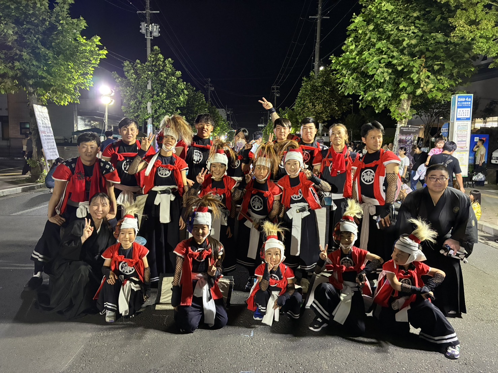

2026.08.07.08.09
北上みちのく芸能祭り
岩手県北上市芳町1‐1 北上市役所前通り 岩手県北上市さくら通り2丁目1‐1 さくらホール

公演について
みちのく芸能祭りは3日間予定でしたが2日目は雨天の為中止となりました。 1日目 結まつり商店街公演（大人）4演目（二番庭、刀狂い、カニムクリ、三人加護） 1日目 育成団体大群舞（きらめき）2演目（一番庭、刀狂い） 2日目 みちのく芸能祭り PAL公演（きらめき）2演目（二番庭、カニムクリ） 2日目 おまつり広場、大群舞 雨天中止 3日目 さくらホール全演目公演（大人）2演目（三番庭、宙返り）
みちのく芸能祭りは2日目に雨天中止になってしまいとても残念でした。 しかし、1日目、3日目子供も大人も全力で踊りました。
PHOTO GALLERY
公演写真


YOUTUBE